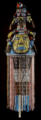
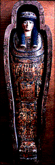

<!--This file created 10/16/97 5:54 PM by Claris Home Page version 2.0-->
<HTML>
<HEAD>
   <TITLE>Mpls Inst Arts - World Mythology: To the Teacher</TITLE>
   <META NAME="GENERATOR" CONTENT="Claris Home Page 2.0">
   <X-SAS-WINDOW TOP="163" BOTTOM="480" LEFT="72" RIGHT="602">
<HEAD>
</HEAD>
<BODY TEXT="#111111" LINK="#660000" ALINK="#AA0000" VLINK="#444444" BACKGROUND="backgroundbrown.gif">

<P><A NAME="top"></A>&nbsp;<TABLE BORDER="0" CELLSPACING="10" WIDTH="445">
   <TR>
      <TD>
         <P><FONT SIZE="+2">Welcome to World Mythology</FONT>
         <HR>
         <!--------Top Myth Menu------></CENTER><TABLE BORDER="3">
            <TR>
               <TD>
                  <P><CENTER><A HREF="introduction.html#top">Introduction</A>
                  ~ <A HREF="mythbyimage.html#top">Myth by Image</A>
                  ~ <A HREF="culturelist.html#top">Myth by
                  Culture</A> ~ <A HREF="myths.html#top">Mythological
                  Comparisons</A> ~
                  <A HREF="glossary.html#top">Glossary</A> ~
                  <A HREF="suggestedreading.html#top">Suggested
                  Readings</A> ~
                  <A HREF="downloadables.html#top">Downloadable
                  Resources</A> ~
                  <A HREF="../tta/classroom_materials_order.html">How to Order</A> ~
                  <A HREF="myth_evaluation.html#top">Your Comments
                  Wanted</A></CENTER>
               </TD></TR>
         </TABLE>
         <HR>
         <BR>
         
         </P>
         
         <P><B><FONT SIZE="+2">&nbsp;</FONT></B></P>
         
         <P><CENTER><B><FONT SIZE="+2">To the Teacher</FONT></B>
         </CENTER></P>
         
         <P>This collection of images brings together 24 works of art
         inspired by mythology around the world. The rich variety of
         images makes it possible for you to address a wide range of
         study areas, including language arts, humanities, art,
         social and cultural studies, and world religions.
         <A HREF="myths.html#top">Mythological Comparisons</A> will
         help you explore the relationships among the images. Have
         fun being creative with these materials!</P>
         
         <P><BR ALIGN="clear">
         
         &nbsp;</P>
         
         <P><CENTER><B><FONT SIZE="+1">Image Essays and Discussion
         Questions</FONT></B></CENTER></P>
         
         <P>Each image has a corresponding essay containing:</P>
         
         <UL>
            <LI>Key points
            
            <LI>The myth that inspired the work of art
            
            <LI>Historical and cultural background information
            
            <LI>Description of the work of art
            
            <LI>Discussion of the style of the work of art
            
            <LI>Suggested discussion questions
         </UL>
         
         <P>All vocabulary words, in CAPITAL LETTERS in the essay,
         are defined in the
         <B><A HREF="glossary.html">Glossary</A></B>. Keep in mind
         that the essays are written for you - the educator. They are
         not intended to be read by or to your students. Feel free to
         adapt the information to the level of your students' needs.
         You are the best judge of what will be a useful supplement
         to your curriculum.</P>
         
         <P>Suggested discussion questions accompany each essay.
         <B>Look</B> questions focus on what can be gleaned from
         direct observation, while <B>Think</B> questions ask
         students to make hypotheses and draw conclusions. The
         questions can be easily adapted for any age. In general,
         younger students and those with little experience in the
         discipline of art will find <B>Look</B> questions most
         interesting. Directions to the educator are printed in
         <B>boldface</B>.</P>
         
         <P></UL></P>
         
         <P><B><FONT SIZE="+1">&nbsp;</FONT></B></P>
         
         <P><B><FONT SIZE="+1">&nbsp;</FONT></B></P>
         
         <P><CENTER><B><FONT SIZE="+1">General Thematic Questions and
         Discussion Points</FONT></B></CENTER></P>
         
         <P>1. Mythology often addresses the theme of good conquering
         evil. How is this theme addressed in the stories in this
         collection of images? Who or what represents good in these
         stories? Who or what represents evil? Which works of art
         focus on this conflict? How?</P>
         
         <P>&nbsp;</P>
         
         <P>2. All the works of art in this collection of images were
         inspired by mythology. What else do they have in common? How
         are they different? Use the
         <A HREF="myths.html#top">Mythological Comparisons</A> chart
         to select works of art for comparison. You might choose two
         works of art from the category of
         <A HREF="heromyths.html#top">Hero Myths</A>, for example,
         and compare them in terms of media and technique, function,
         size, cultural origins, narrative, style, expressive
         quality, subject matter, or artistic intent.</P>
         
         <P><B>&nbsp;</B></P>
         
         <P><B>Brainteaser:</B> Do these works of art illustrate
         myths? How? How is an illustration different from other
         works of art?</P>
         
         <P><CENTER><B><FONT SIZE="+1">World Mythology
         Tours</FONT></B></CENTER></P>
         
         <P>We hope that this collection of images will be useful as
         preparation for or follow-up to a visit to The Minneapolis
         Institute of Arts. If you would like to reserve a docent-led
         tour, please call the Tour Office at (612) 870-3140 at least
         one month in advance.</P>
         
         <P>&nbsp;</P>
         
         <P>When you schedule a docent-led tour, your docent will
         contact you before your tour date. Since it is not possible
         for the museum to keep all works of art on view at all
         times, we recommend that you plan to discuss your particular
         interests with your docent when she or he calls. Because
         April and May are the museum's busiest months, we encourage
         you to schedule tours at other times of the year.</P>
         
         <P>Now, if you're ready, begin exploring World Mythology
         with the <A HREF="introduction.html#top">Introduction</A>.
         <!--------Bottom Myth Menu------></P>
         
         <P>
         <HR>
      
      </TD></TR>
</TABLE> </CENTER> <TABLE BORDER="3">
   <TR>
      <TD>
         <P><CENTER><A HREF="introduction.html#top">Introduction</A>
         ~ <A HREF="mythbyimage.html#top">Myth by Image</A> ~
         <A HREF="culturelist.html#top">Myth by Culture</A> ~
         <A HREF="myths.html#top">Mythological Comparisons</A> ~
         <A HREF="glossary.html#top">Glossary</A> ~
         <A HREF="suggestedreading.html#top">Suggested Readings</A> ~
         <A HREF="downloadables.html#top">Downloadable Resources</A>
         ~ <A HREF="../tta/classroom_materials_order.html">How to
         Order</A> ~ <A HREF="myth_evaluation.html#top">Your Comments
         Wanted</A></CENTER>
      </TD></TR>
</TABLE></P>
</BODY>
</HTML>
